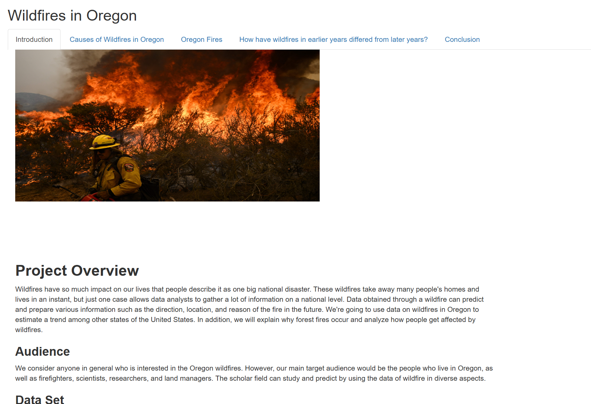
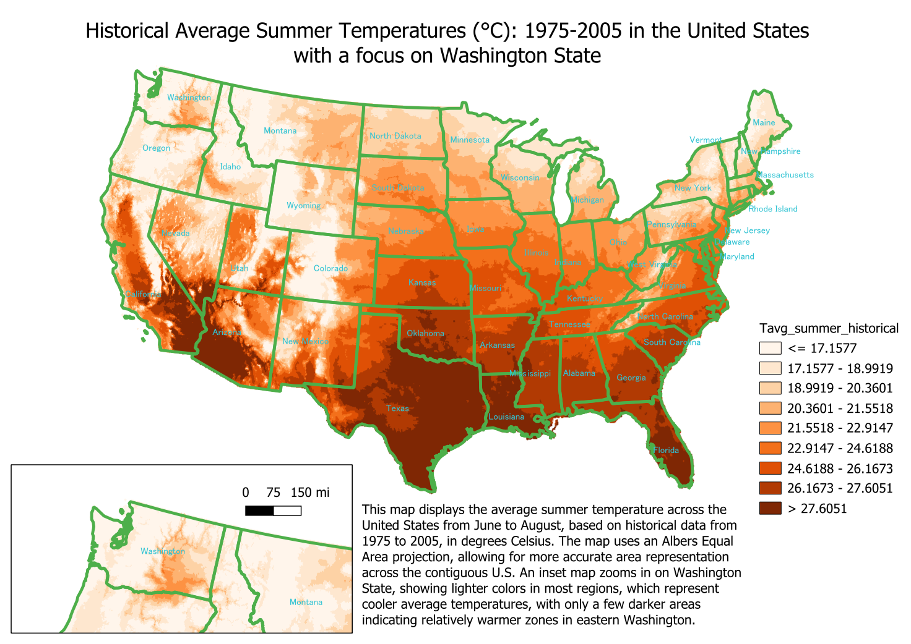

Portfolio
Hello! I'm Simran, a recent graduate from the University of Washington with a B.A. in
Geography–Data Science
and a minor in South Asian Studies. I specialized in multiple programs within GIS and data science like R, QGIS, ArcGIS Online, and Web GIS.
Featured Projects
ArcGIS Online Story Maps:
- Partition of British India
View StoryMap
Historical mapping and personal reflection on migration and borders.
- History of the Bhatti Name
View StoryMap
Genealogical mapping across regions and generations.
Web GIS – Carbon Emissions in Europe
- Built with HTML, JavaScript, and SQL
- Features interactive time slider, emissions gradients, and popups
- Designed for public and policymaker engagement
Launch App
View GitHub Repo

ArcGIS Pro – Drinking Water Systems & Buffer Zones
- Created in ArcGIS Pro using public data from the
Washington Department of Health
- Mapped drinking water systems across Snohomish County and applied a 500-meter buffer analysis.
- Styled water systems by operational status (active, inactive) using unique symbology.
- Designed a professional layout with legend, scale bar, north arrow, and descriptive text.

Python – Ferry Ridership Flow Visualization
- Sankey diagram of Puget Sound ferry routes
- Processed WSDOT data to visualize passenger flows

The Sankey diagram presents ferry routes as flows, with origin points on the left and destination points on the right. The width of each flow corresponds to the total number of passengers, allowing for an immediate visual comparison between routes.
We used three variables:
- Source: Ferry terminal of departure
- Target: Destination terminal
- Value: Number of riders
Data collected from:
Washington State Ferries Traffic Statistics Rider Segment Report
R Shiny – Oregon Wildfires Visualizer
- Interactive wildfire map using R Shiny
Launch App
GitHub Repo

QGIS
- Compared historical vs. projected temperatures data across the U.S.
- Used raster datasets, interpolation, and custom symbology.
- Designed inset maps to highlight regional climate impacts.
